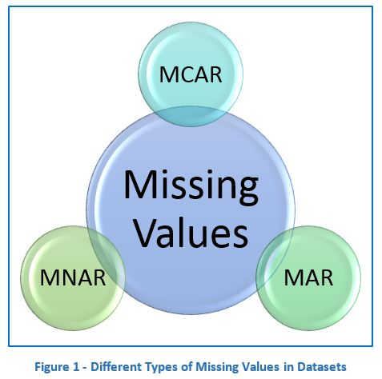
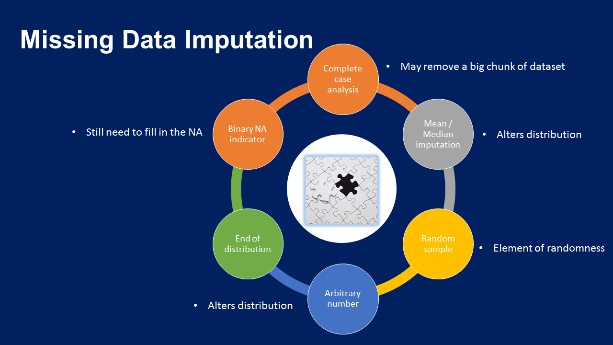
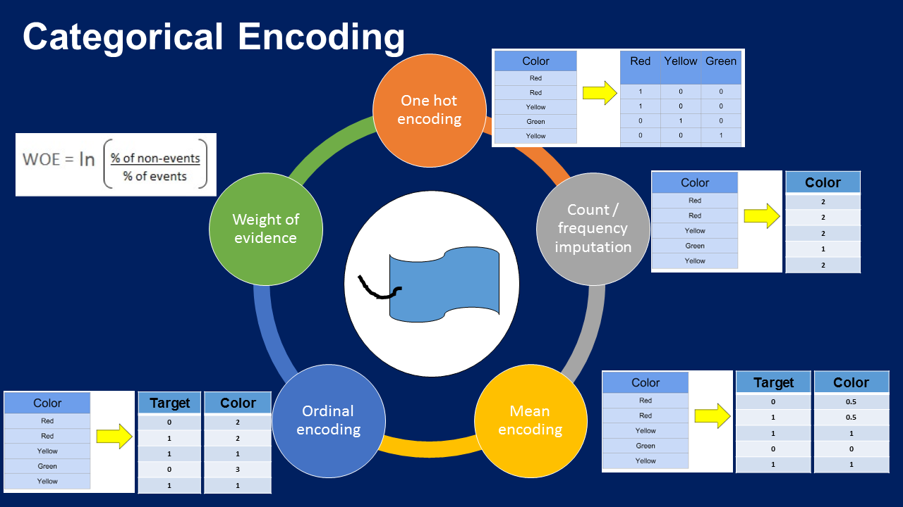
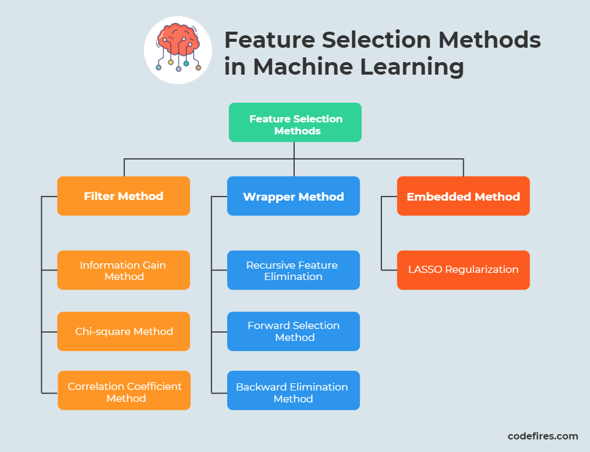
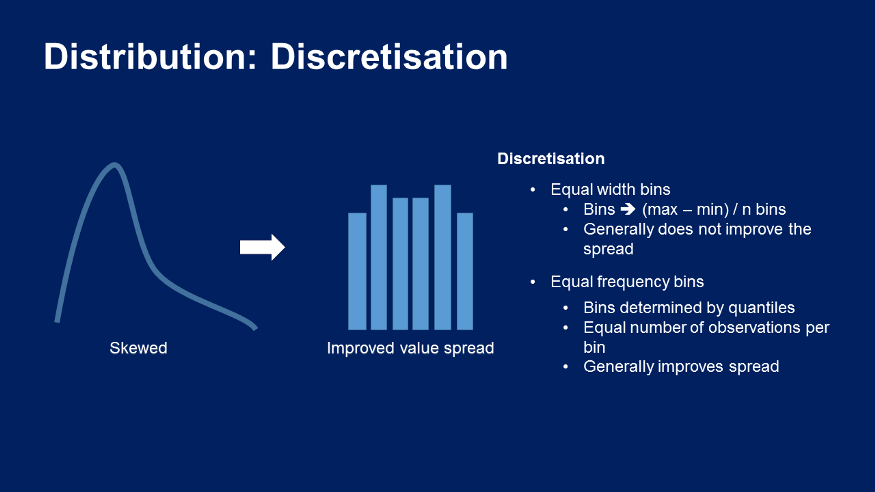

II. Tiền xử lý dữ liệu
Feature Engineering for Machine Learning — Online Course — Image by the author
1. Xử lý dữ liệu bị khuyết (Missing Data)


Các kỹ thuật gán missing data
- Phương pháp 1: Xóa đi giá trị khuyết
- Giả định là dữ liệu khuyết hoàn toàn ngẫu nhiên (MCAR)
- Để xóa giá trị đó đi thường bài toán ta đặt ngưỡng là dữ liệu khuyết không quá 5%
- Ưu điểm: Dễ thực hiện, nhanh chóng và duy trì được phân phối biến ban đầu
- Nhược điểm: Nó có thể mất đi phần lớn dữ liệu, có thể các quan sát bị xóa đó rất quan trọng
- Phương pháp 2: Gán giá trị trung bình - trung vị
- Giả định dữ liệu bị khuyết hoàn toàn ngẫu nhiên (MCAR)
- Các quan sát bị khuyết trong tập dữ liệu giống phân lớn quan sát trong biến.
- Nếu dữ liệu là phân phối chuẩn thì ta có thể gán mean hay median đều được vì 2 giá trị nó xấp xí bằng nhau.
- Nếu dữ liệu là phân phối lệch thì ta sẽ gán median
- Ngưỡng để gán dữ liệu là không quá 5%, tuy nhiên trong thực tế phương pháp này rất là phổ biển được gán cả kể khi không phải là MCAR và khuyết nhiều giá trị
- Ưu điểm: Dễ thực hiện, nhanh chóng
- Nhược điểm: Làm thay đổi phân phối biến ban đầu, làm thay đổi phương sai,ma trận hiệp phương sai ban đầu
- Phương pháp 3: Gán giá trị bất kỳ
- Giả định dữ liệu không khuyết ngẫu nhiên MNAR
- Ưu điểm: Nhanh chóng, dễ thực hiện, nắm bắt được tầm quan trọng của giá trị khuyết
- Nhược điểm: Thay đổi phương sai - hình dạng phân phối ban đầu, Nếu gán giá trị nằm ở cuối phân phối thì có thể che dấu trị outlier hoặc tạo thêm giá trị outlier mới
- Phương pháp 4: Gán giá trị ở cuối phân phối
- Giả định dữ liệu không khuyết ngẫu nhiên MNAR
- Ưu điểm: Dễ thực hiện, nhanh chóng, nắm bắt được tầm quan của khuyết nếu có
- Nhược điểm: Nó làm thay đổi phương sai và hình dạng phân phối ban đầu,Nếu chọn giá trị nằm ở cuối phân phối, nó sẽ che dấu outlier hoặc tạo thêm giá trị outlier
- Phương pháp 5: Gán giá trị xuất hiện thường xuyên (hạng mục)
- Giả định dữ liệu khuyết hoàn toàn ngẫu nhiên MCAR
- Các giá trị bị khuyết hầu hết trong giống với giá trị mode
- Ngưỡng để gán thường là không quá 5%
- Ưu điểm: Dễ dàng thực hiện, nhanh chóng
- Nhược điểm: Làm thay đổi mối quan hệ nhãn mode với các biến khác, có thể gây ra overfit nếu giá trị Na quá nhiều
- Phương pháp 6: Gán giá trị bị thiếu với 1 hạng mục mới
- Phương pháp này thường được sử dụng rất nhiều vì ít đặt giả định về dữ liệu
- Ưu điểm: Dễ dàng thực hiện, nhanh chóng, không có giả định về dữ liệu
- Nhược điểm: Nếu số lượng Na quá nhỏ thì có thể ra overfit
- Phương pháp 7: Gán mẫu ngẫu nhiễn
- Gán mẫu ngẫu nhiên gồm việc 1 quan sát ngẫu nhiên từ vùng có các quan sát có sẵn và sử dụng giá trị được trích để điền các giá trị Na. Trong gán mẫu ngẫu nhiên, càng có giá trị Na trong biến thì càng lấy nhiều quan sát ngẫu nhiên
- Giả định dữ liệu khuyết hoàn toàn ngẫu nhiên MCAR
- Ưu điểm: Dễ dàng thực hiện,bảo toàn phương sai
- Nhược điểm: Tính ngẫu nhiên,mối quan hệ của các biến gán với biến khác sẽ bị ảnh hưởng,cần nhiều bộ nhớ để triển khai,vì chúng ta cần lưu trữ tập huấn luyện ban đầu để trích xuất ra các giá trị
- Phương pháp 8: Gán thêm chỉ số khuyết
- Giả định dữ liệu không khuyết ngẫu nhiên, chúng ta có thể gán giá trị mean,median,mode và gắn thêm cờ vào các giá trị bị khuyết đó, cờ sẽ là số nhị phân (0,1)
- Cặp kết hợp: mean/median + chỉ số, mode + chỉ số, mẫu ngẫu nhiên + chỉ số
- Dữ liệu bị khuyết đó không có tính dự đoán
- Ưu điểm: Dễ thực hiện, nắm bắt được tầm quan trọng khuyết
- Nhược điểm: Mở rộng không gian đặc trưng, mất thời gian vì vẫn cần gán biến đầu nữa
- Phương pháp 9: Sử dụng KNN Mọi người có thể đọc bài viết này tham khảo KNN Imputation
Bài viết tham khảo
2. Mã hóa dữ liệu (Categorical Data Encoding )

Categorical encoding techniques — Image by the author
- Mã hóa onehot (One Hot Encoding)
- Mã hóa one-hot là mã hóa các hạng mục với biến boolean khác nhận các giá trị 0 hoặc 1
- Mã hóa k-1: Tính đến việc sử dụng ít hơn một thứ nguyên nhưng vẫn biểu diễn được toàn bộ thông tin và tránh đưa vào thông tin dư thừa
- Mã hóa k: Khi xây dựng thuật toán cây, khi lựa chọn đặc trưng bởi các thuật toán đệ quy, khi muốn xác định mức độ quan trọng của từng biến hạng mục riêng lẻ
- Ưu điểm: Dễ dàng thực hiện, không đưa ra giả định về dữ liệu hoặc phân phối biến, giữ được thông tin hạng mục
- Nhược điểm: Mở rộng không gian đặc trưng, nhiều biến giả có thể giống nhau đưa ra thông tin dư thưa, không thể thêm thông tin sau khi đã mã hóa
- Các thư viện hỗ trợ hay được sử dung: pandas,sklearn,feature-engine
- Mã hóa hạng mục thường xuất hiện (OHE)
- Khi các biến hạng mục có cardinality cao hoặc nhãn hiểm có thể xuất hiện trong tập traning, hoặc chỉ xuất hiện trong tập test và gặp rắc rối khi tính toán khi không gian đặc trưng quá lớn
- Lựa chọn ngưỡng những hạng mục thường xuất hiện và mã hóa one-hot
- Ưu điểm: Dễ thực hiện, không mở rộng không gian đặc trưng qua nhiều, thích hợp mô hình tuyến tính
- Nhược điểm: Dễ dàng mất thông tin khi bỏ qua nhãn, không thêm được thông tin sau khi mã hóa
- Thư viện hỗ trợ hay được sử dụng: pandas,sklearn,feature-engine
- Mã hóa số nguyên
- Thay thế các hạng mục từ số 0 đến n
- Ưu điểm: Dễ dàng triển khai, không mở rộng không gian đặc trưng
- Nhược điểm: Không thu thập được thông tin về hạng mục,không thích hợp với mô hình tuyến tính
- Thư viện hỗ trợ hay được sử dụng: pandas,sklearn,feature-engine
- Mã hóa có mục tiêu
- Tính đơn điệu: Khi một giá trị của một biến tăng thì giá trị biến kia cũng tăng hoặc 1 biến tăng, biến kia lại giảm
- Ưu điểm: Nắm bắt thông tin hạng mục, tạo mối quan hệ đơn điệu giữa biến và mục tiêu,không mở rộng không gian đặc trưng
- Nhược điểm: Dễ dẫn tới overfitting, khó kiểm định chéo với các thự viện hiện tại
- Thư viện hỗ trợ hay được sử dụng: pandas,sklearn,feature-engine
- Mã hóa đếm - tần số
- Chúng ta thay thế các hạng mục bằng số lượng quan sát hiện thị hạng mục trong tập dữ liệu, chúng ta cũng có thể thay thế hạn mục bằng tần số hoặc tỷ lệ phần trăm
- Ưu điểm: Dễ dàng triển khai, không mở rộng không gian đặc trưng
- Nếu 2 hạng mục khác nhau có cùng tần số xuất hiện trong tập dữ liệu, tức là chúng có số lượng quan sát giống nhau thì sẽ được thay thể bằng cùng 1 số: có thể mất thông tin có giá trị
- Thư viện hỗ trợ hay được sử dụng: pandas,feature-engine
Code
#Sử dụng thư viện feature_engine sẽ tiện hơn vì nó trả về dataframe dễ dàng đánh giá
from feature_engine.encoding import OneHotEncoder
ohe_enc = OneHotEncoder(
top_categories=None,
variables=['sex', 'embarked'], # có thể chọn biến để mã hóa
drop_last=True)
ohe_enc.fit(X_train)
X_train = ohe_enc.transform(X_train)
Code
#Sử dụng thư viện feature_engine sẽ tiện hơn vì nó trả về dataframe dễ dàng đánh giá
from feature_engine.encoding import OneHotEncoder
ohe_enc = OneHotEncoder(
top_categories=10, # lựa chọn ngưỡng
variables=['sex', 'embarked'], # có thể chọn biến để mã hóa
drop_last=True)
ohe_enc.fit(X_train)
X_train = ohe_enc.transform(X_train)
Code
#Sử dụng thư viện feature_engine sẽ tiện hơn vì nó trả về dataframe dễ dàng đánh giá
from feature_engine.encoding import OrdinalEncoder
ordinal_enc = OrdinalEncoder(
encoding_method='arbitrary',
variables=['Neighborhood', 'Exterior1st', 'Exterior2nd'])
ordinal_enc.fit(X_train)
X_train = ohe_enc.transform(X_train)
Code
#Sử dụng thư viện feature_engine sẽ tiện hơn vì nó trả về dataframe dễ dàng đánh giá
from feature_engine.encoding import OrdinalEncoder
ordinal_enc = OrdinalEncoder(
encoding_method='ordered', #Thay đổi phương thức khác
variables=['Neighborhood', 'Exterior1st', 'Exterior2nd'])
ordinal_enc.fit(X_train)
X_train = ohe_enc.transform(X_train)
Code
#Sử dụng thư viện feature_engine sẽ tiện hơn vì nó trả về dataframe dễ dàng đánh giá
from feature_engine.encoding import CountFrequencyEncoder
count_enc = CountFrequencyEncoder(
encoding_method='count', # để thực hiện tần số ==> encoding_method='frequency'
variables=['Neighborhood', 'Exterior1st', 'Exterior2nd'])
count_enc.fit(X_train)
X_train = count_enc.transform(X_train)
3. Xử lý dữ liệu ngoại lai (Outliers)
- Trimming(Cắt tỉa)
- Loại bỏ các điểm outlier ra khỏi tập dữ liệu
- Ưu điểm: dễ dàng, nhanh chóng
- Nhược điểm: Các điểm outlier có thể là những thông tin rất ưu ích, nếu giá trị outlier quá nhiều và xóa nó đi sẽ mất phần lớn dữ liệu
- Quan trọng là oulier cần phát hiện và chỉ loại bỏ trong tập traning không loại bỏ trong tập test
- Censoring/Capping
- Giới hạn phạm vi min/max của phân phối
- Nói cách khác, những giá trị lớn hơn hoặc nhỏ hơn các giá trị được xác định tùy ý đều được kiểm duyệt.
- Có thể giới hạn bằng cách: tùy ý, IQR, phép xẩp xí Gauss, quantile
- Capping có thể thực hiện ở cả 2 đầu hoặc 1 đầu phân phối còn tùy thuộc vào biến và người dùng.
- Ưu điểm: Không loại bỏ dữ liệu
- Hạn chế là làm sai lệch phân phối
Outlier là một điểm dữ liệu khác biệt rất lớn so với dữ liệu còn lại. “Outlier là một quan sát sai lệch rất nhiều so với các quan sát khác để làm dấy lên nghi ngờ rằng nó được tạo ra bởi một cơ chế khác” Các yếu tố thống kê như giá trị trung bình và phương sai rất dễ bị ảnh hưởng bởi outlier. Ngoài ra, một số mô hình học máy nhạy với các outlier có thể làm giảm chất lượng của chúng. Do đó, chúng ta thường loại bỏ outlier khỏi các biến tùy thuộc vào thuật toán mà chúng ta muốn huấn luyện.
Code
def find_skewed_boundaries(df, variable, distance):
# tính các ranh giới bên ngoài có outlier
# cho các phân phối lệch
# truyền distance làm đối số, cho chúng ta lựa chọn
# ước tính 1.5 * IQR hoặc 3 * IQR để tính
# các ranh giới.
IQR = df[variable].quantile(0.75) - df[variable].quantile(0.25)
lower_boundary = df[variable].quantile(0.25) - (IQR * distance)
upper_boundary = df[variable].quantile(0.75) + (IQR * distance)
return upper_boundary, lower_boundary
def trimming(data,variable,lower,upper):
return np.where(data[variable] > upper, True,np.where(data[variable] < lower, True, False))
Code
from feature_engine.outliers import Winsorizer
windsoriser = Winsorizer(
capping_method='quantiles', # chọn từ iqr, gaussian hoặc quantiles
tail='both', # cap left, right or both tails giới hạn đuôi trái, phải hoặc cả 2
fold=0.05,
var1iables=['RM', 'LSTAT', 'CRIM'])
windsoriser.fit(boston)
boston_t = windsoriser.transform(boston)
4. Co dãn đặc trưng (Feature Scaling)
- Standardisation(Chuẩn tắc hóa)
- Chuẩn tắc hóa gồm căn biến ở 0 và phương sai thành 1
- Công thức:
- Duy trì hình dạng phân phối ban đầu và outlier
- Giá trị min/max của biến khác nhau thay đổi
- Hầu hết mọi trường hợp đều sử dụng được phương thức này!
- Co dãn min-max(Min-Max-Scaling)
- Co giãn về khoảng từ 0 đến 1
- Công thức:
- Phương sai thay đổi trên các biến
- Không duy trì hình dạng phân phối ban đầu
- Nhạy cảm outlier
- Trường hợp hay được sử dụng với biến đó xấp xỉ bằng phân phối chuẩn
- Chuẩn hóa trung bình(Mean normalisation)
- Co dãn dữ liệu về phạm vị -1 đến 1
- Tập trung giá trị mean ở 0
- Có thể thay đổi hình dạng phân phối ban đầu
- Duy trì outlier
- Công thức:
Code
from sklearn.preprocessing import StandardScaler
scaler = StandardScaler()
# khớp scaler với tập huấn luyện, nó sẽ học các tham số
scaler.fit(X_train)
# biến đổi tập huấn luyện và tập kiểm tra
X_train_scaled = scaler.transform(X_train)
X_test_scaled = scaler.transform(X_test)
Code
from sklearn.preprocessing import MinMaxScaler
scaler = MinMaxScaler()
# khớp scaler với tập huấn luyện, nó sẽ học các tham số
scaler.fit(X_train)
# biến đổi tập huấn luyện và tập kiểm tra
X_train_scaled = scaler.transform(X_train)
X_test_scaled = scaler.transform(X_test)
Code
scaler_mean = StandardScaler(with_mean=True, with_std=False)
# thiết lập robustscaler để nó KHÔNG loại median
# nhưng chuẩn hóa bằng max()-min(), quan trọng với
# phạm vi quantile từ 0-100, thể hiện min và max
scaler_minmax = RobustScaler(with_centering=False,
with_scaling=True,
quantile_range=(0, 100))
# khớp scaler với tập huấn luyện để nó học các tham số
scaler_mean.fit(X_train)
scaler_minmax.fit(X_train)
# biến đổi tập huấn luyện và tập kiểm tra
X_train_scaled = scaler_minmax.transform(scaler_mean.transform(X_train))
X_test_scaled = scaler_minmax.transform(scaler_mean.transform(X_test))
Source code tham khảo
5. Lựa chọn đặc trưng (Feature selection)

Hình ảnh minh họa các phương pháp lựa chọn đặc trưng
- Lựa chọn đặc trưng theo phương pháp gói(Wrapper Method)
- Dùng thuật toán học máy để để dự đoán, lựa chọn tập hợp con đặc trưng tối ưu, về bản chất thì phương pháp gói xây dựng một thuật toán học máy cho từng tập hợp con đặc trưng mà chúng ta đánh giá, sau đó chọn tập hợp con của biến tạo ra chất lượng cao nhất
- Lựa chọn đặc trưng theo văn xuôi (Forward selection method)
- Huấn luyện mô hình cho từng đặc trưng trong tập dữ liệu và lựa chọn đặc đặc trưng mở đầu khiến mô hình hoạt động tốt nhất theo tiêu chí đánh giá
- Nó tạo ra mô hình cho tất cả các tổ hợp đặc trưng ở bước trước và đặc trưng thứ 2, có nghĩ là thêm mỗi lần đặc trưng vào các đặc trưng ở bước trước cho khi xác định dừng
- Phép đo chất lượng mô hình có thể ROC-AUC hoặc R2-score,...
- Lựa chọn đặc trưng theo phương pháp ngược (Backward Elimination Method)
- Huấn luyện mô hình với tất các đặc trưng trong tập dữ liệu và xác định chất lượng mô hình
- Sau đó, huấn luyện mô hình trên tất cả tổ hợp có thể có của đặc trưng -1, loại bỏ đặc trưng trả về mô hình có chất lượng cao khi loại bỏ đặc trưng
- Thuật toán dừng thì tùy thuộc vào tiêu chí ta chọn dừng
- Lựa chọn đặc trưng theo phương pháp ngược gọi là thủ tục tham lam vì nó đánh giá tất cả tổ hợp đặc trưng n,n-1,n-2. Do đó, nó rất khó để tính toán thẩm chí không khả thi khi không gian đặc trưng lớn
- Lựa chọn đặc trưng theo phương pháp lọc (Filter Method)
- Loại bỏ các đặc trưng trùng lặp - đặc trưng không đổi- đặc trưng gần như không đổi
- Về cơ bản thì cách thức giống nhau, nó sẽ loại các đặc trưng về cơ bản là giống nhau, như vậy sẽ giúp cho tập dữ liệu của mình tránh các trường hợp dừ thừa
- Loại bỏ các đặc trưng tương quan
- Tương quan là phép đo lượng tuyến tính của 2 biến ngẫu nhiên, mức độ tương cao càng cao thì tuyến tính càng cao rất phù hợp cho các mô hình tuyến tính
- Tuy nhiên, nếu 2 biến dự báo có tương cao, thì bản chất, chúng sẽ cung cấp thông tin dư thừa thông tin về mục tiêu, vì chúng ta có thể dự đoán biến tiêu chỉ cần 1 biến dự báo
- Để tạo mô hình học máy tốt, chúng ta cần tìm những biến có tương quan cao với biến mục tiêu nhưng không tương với biến khác. Nói cách khác là, chúng ta muốn yếu tố dự đoán tương với mục tiêu chứ không tương lại với nhau
- Lựa chọn đặc trưng theo phương pháp thông kê - Anova - Chi-squared
- Anova là kiểm định thống kê đánh giá giả thuyết có 2 hoặc nhiều mẫu có giá trị trung bình. Anova đưa ra một số giả định về các mẫu mà chúng ta đang đánh giá - chúng độc lập, được phân bố chuẩn - đồng nhất về phương sai.
- Lựa chọn đặc trưng theo phương nhúng (Embedded Method)
- Lasso Regularization
- Huấn luyện mô hình hồi quy tuyến tính và chúng ta thêm tham số regularization l1-norm vào.
- Các trọng số trong mô hình Lasso luôn có xu hướng tiến về 0. Vì vậy chúng ta có thể dựa vào yếu tố này để lựa chọn đặc trưng, các trọng số w khác không thì tương đương với đặc trưng quan trọng và trong số w bằng 0 thì ngược lại
- Một phương pháp mới đó là hybrid method (Phương pháp lai hóa) chính là sự kết hợp phương gói và nhúng
- Lựa chọn đặc trưng loại bỏ đặc trưng bằng đề quy (Recursive Feature Elimination)
- Huấn luyện mô hình với toàn bộ dữ liệu và xếp mức độ quan trọng của các đặc trưng theo mô hình
- Loại bỏ các đặc trưng ít quan trong nhất và xây dựng mô hình với các đặc trưng còn lại
- Tính toán phép đo lường chất lượng:roc-auc, mse, rmse,....
- Nếu phép đo giảm nhiều hơn ngưỡng được thiết lập thì đặc trưng đó quan trọng và giữ lại, nếu không , xóa
- Lặp lại các bước 2,3,4 cho đến khi các đặc trưng đc đánh giá
- Lựa chọn đặc trưng thêm đặc trưng bằng đệ quy (Recursive Feature Addition)
- Huấn luyện mô hình với toàn bộ dữ liệu và xếp mức độ quan trọng của các đặc trưng theo mô hình
- Xây dựng mô hình chỉ 1 đặc trưng, đặc trưng quan trọng nhất, đánh giá chất lượng
- Thêm một đặc trưng - đặc trưng quan trọng nhất và xây dựng mô hình với đặc trưng ở bước trước
- Tính toán các phép đo lường
- Nếu phép đo lường tăng nhiều hơn ngưỡng đc thiết lập thì đặc trưng đó giữ lại còn không xóa
- Lặp lại các bước trên khi nào đi qua hết các đặc trưng
- Rời rạc hóa (Discretisation)
- Rời rạc hóa là tiến trình chuyển đổi dữ liên tục sang dữ liệu rời rạc bằng cách tạo 1 tập hợp các khoảng liên tục trải dài trong phạm vi giá trị của biến
- Rời rạc hóa còn được gọi là binning, trong đó mỗi khoảng này cũng được gọi là bin. Rời rạc hóa có thể cải thiện chêch lệch giá trị của biến, cũng như xử lý outlier. Chúng ta sẽ tiếp cận với 2 phương pháp: Supervised và Unsupervised
- Rời rạc hóa không có giám sát
- Rời rạc hóa sử dụng khoảng cách bằng nhau
- Chia phạm vị giá trị có thể của các biến thành N bin hoặc các khoảng
- Các khoảng/bin này sẽ có khoảng cách bằng nhau. Nó được thực hiện bằng cách lấy giá trị lớn nhất trừ cho giá trị nhỏ nhất rồi chia có khoảng mình mong muốn
- Chúng ta sẽ sắp xếp các quan sát thuộc các bin đó, tuy nhiên cần chú ý nếu như là phân phối lệch thì không thể cải thiện lan truyền giá trị
- Rời rạc hóa sử dụng tần số bằng nhau
- Chia các phạm vi các giá trị có thể của biến thành một số khoảng mà mỗi khoảng lại chứa số quan sát xấp xỉ nhau, để tính ranh giới cho từng khoảng này, chúng ta sẽ tính các quantile của biến
- Kỹ thuật này giúp cải thiện chêch lệch giá trị và nó cũng xử lý outlier khi chúng ta được phân bổ vào vùng đầu hoặc cuối.
- Việc cải thiện chêch lệch giá trị sẽ giúp các mô hình tuyến tính giả định chêch lệch đều hơn, phân phối các giá trị của biến chuẩn hơn.
- Rời hóa sử dụng K-means
- Rời rạc hóa sử dụng K-means gồm việc áp dụng phân cụm K-means vào biến liên tục để thu được các cụm khác nhau, mỗi cụm tương ứng với một bin mà chúng ta sẽ sắp xếp các giá trị của biến.
- Rời rạc hóa sử dụng K-means không cải thiện chênh lệch giá trị. Nó giúp xử lý outlier, mặc dù outlier có thể có ảnh hưởng đến vị trí tâm của các cụm.
- Rời rạc hóa có giám sát
- Rời rạc hóa sử dụng Decision tree
- Chúng ta sẽ sử dụng DT để xác định k bin tối ưu mà chúng ta cần xắp xếp các giá trị biến. Khi DT đưa ra quyết định , nó sẽ chỉ định một quan sát cho một trong n lá cuối của DT. Vì DT có số lượng xác định các lá hoặc nút kết thúc nên nó sẽ biến đổi một biến liên tục thành một đầu ra rời rạc.
- DT giúp chúng ta xử lý outlier. Kỹ thuật này cũng hữu ích với các mô hình tuyến tính vì nó tránh việc phải thực hiện hai bước như chúng ta đã làm trước đây, khi rời rạc hóa biến trước tiên rồi sau đó mới mã hóa biến để có được mối quan hệ đơn điệu (sử dụng DT giúp chúng ta có thể làm hai việc cùng một lúc).
Code
from feature_engine.selection import (DropConstantFeatures,DropDuplicateFeatures)
pipe = Pipeline([
('constant', DropConstantFeatures(tol=0.998)),
('duplicated', DropDuplicateFeatures())
])
pipe.fit(X_train)
Code
from feature_engine.selection import DropCorrelatedFeatures
sel = DropCorrelatedFeatures(
threshold=0.8,
method='pearson',
missing_values='ignore')
pipe.fit(X_train)
Code
from sklearn.feature_selection import SelectFromModel
from sklearn.linear_model import Lasso
#Khởi tạo và training model
sel_ = SelectFromModel(Lasso(alpha=100, random_state=10))
sel_.fit(scaler.transform(X_train), y_train)
#Lấy các đặc trưng quan trọng
selected_feat = X_train.columns[(sel_.get_support())]
Code
# build initial model using all the features
model = GradientBoostingRegressor(n_estimators=10, max_depth=4, random_state=10)
sel = RecursiveFeatureElimination(
variables=None, # automatically evaluate all numerical variables
estimator = model, # the ML model
scoring = 'r2', # the metric we want to evalute
threshold = 0.001, # the maximum performance drop allowed to remove a feature
cv=3, # cross-validation
)
sel.fit(X_train, y_train)
Code
# build initial model using all the features
model = GradientBoostingRegressor(n_estimators=10, max_depth=4, random_state=10)
rfa = RecursiveFeatureAddition(
variables=None, # automatically evaluate all numerical variables
estimator=model, # the ML model
scoring='roc_auc', # the metric we want to evalute
threshold=0.0001, # the minimum performance increase needed to select a feature
cv=2, # cross-validation)
rfa.fit(X_train, y_train)

Discretization of variables
Code
#Gọi thư viện feature_engine
from feature_engine.discretisation import EqualWidthDiscretiser
#Chọn 8 khoảng bằng nhau và lựa chọn biến để rời rạc hóa
disc = EqualWidthDiscretiser(bins=8, variables = ['age', 'fare'])
disc.fit(X_train)
Code
#Gọi thư viện feature_engine
from feature_engine.discretisation import EqualFrequencyDiscretiser
#Chọn 10 khoảng theo quan sát và lựa chọn biến để rời rạc hóa
disc = EqualFrequencyDiscretiser(q=10, variables = ['age', 'fare'])
disc.fit(X_train)
Code
#Gọi thư viện feature_engine
from feature_engine.discretisation import KBinsDiscretizer
disc = KBinsDiscretizer(n_bins=4, encode='ordinal', strategy='kmeans')
disc.fit(X_train[['age', 'fare']])
from feature_engine.discretisation import DecisionTreeDiscretiser
#Lựa chọn tham số: cv là kiểm định chéo, variables có biến rời rạc hóa, param_grid các tham số cần tối ưu
treeDisc = DecisionTreeDiscretiser(cv=10, scoring='accuracy',
variables=['age', 'fare'],
regression=False,
param_grid={'max_depth': [1, 2, 3],
'min_samples_leaf':[10,4]})
treeDisc.fit(X_train, y_train)